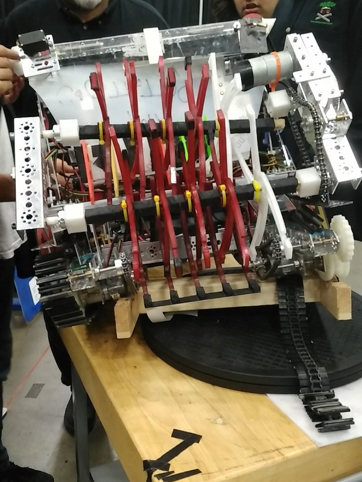

A bit of background: UIL is a Texas-specific organization that hosts competitions in both academic and athletic pursuits. This year, they ran a pilot program for Robotics, using the FTC rules and field from Res-Q. About 72 teams competed in the FTC-based competition, which then was split into two catagories. Unlike regular FIRST tournaments, the awards not earned by competition are given through nomination by other teams.

On Friday, we were not picked to be in the final matches, and unfortunately, we were not picked for any awards. We did, however, meet up with our school's FRC team and say hi, as their competition was starting. After the awards ceremony, we decided to leave. On the way back to the hotel, we noticed the Texas Workforce Commission building, which is one of our sponsors. So, we parked our RV up by the side of the building, and walked in. We talked to the receptionist, and within a few minutes, one of the TWC execs came down to talk to us and take pictures. We gave them a tour of our RV as well, and they seemed impressed, even if it was in post-tournament disarray.
Commissioner Hughs visited with the @FIRSTinTexas Robotics @team6832 today to discuss the #UILRobotics #robotroundup pic.twitter.com/ZhOlTngI9h
— TXWorkforce (@TXWorkforce) July 29, 2016
While this tournament was not our best tournament by a margin the size of the Mongol Empire circa 1279 C.E., we were able to interact with teams in Texas that we normally would not have, get exposure for the MXP all the way down I35, and talk to our one of our sponsors in person. As well, it gave us experience for the future and was a great teambuilding activity. If we get invited to UIL next year, we know what to do to win.